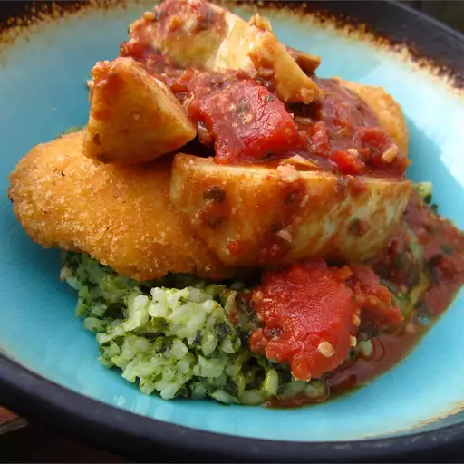

Artichoke and Sun-Dried Tomato Chicken

Description:
Chicken is browned, and then cooked with artichoke hearts, tomatoes, and sun-dried tomato pesto in this simple, elegant recipe.
Personally, I am very much looking forward to trying this one. As someone who does not usually incorperate Artichoke into the dishes I make on a nightly basis, the idea of adding a little but of veggie action to a "fancy" version of chicken parm gets me excited to step into the kitchen!
Ingredients
- 4 skinless, boneless chicken breast halves
- salt and pepper to taste
- 2 teaspoons olive oil
- 1 can diced tomatoes with green peppers and onions
- 1/4 cup sun dried tomato pesto
- 1 can artichoke hearts in water, drained and quartered
Steps
- Season both sides of chicken breasts with salt and pepper. Heat oil in a large skillet over medium-high heat. Place chicken in skillet; cook, turning once to brown each side. Remove chicken from pan, and set aside.
- Pour tomatoes into pan; cook for 1 minute, stirring constantly, and incorporating any brown bits from bottom of pan. Stir in pesto and artichokes, and return chicken to pan. Cover, and reduce heat to medium. Simmer for 5 to 10 minutes, or until chicken is cooked through.
Go Back...